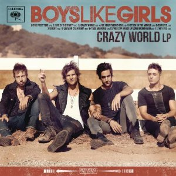
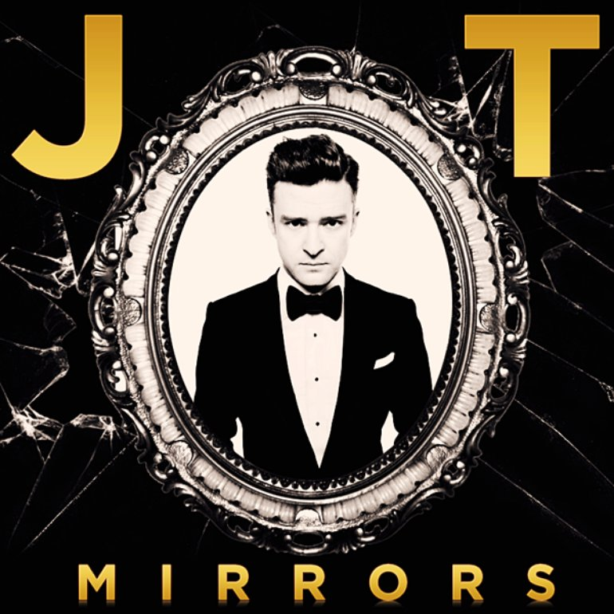
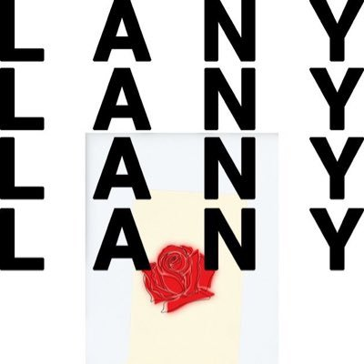
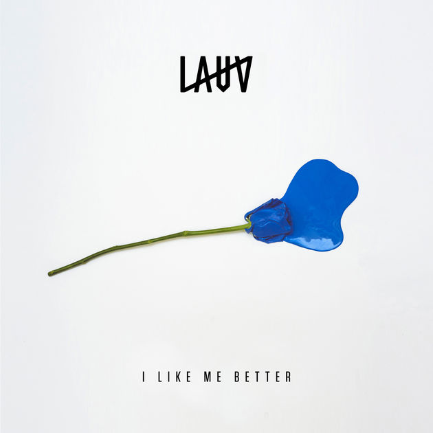
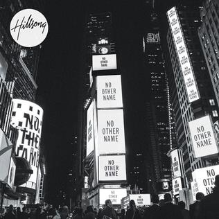
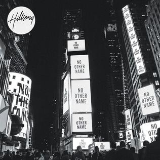

SONGS |
- Be Your Everything (Boys Like Girls)
- Mirrors (Justin Timberlake)
- Hericane (LANY)
- ILYSB (LANY)
- Super Far (LANY)
- Like Me Better (Lauv)
- Venus (Sleeping At Lasy)
- Wonderwall (Oasis)
- Robbers (The 1975)
- Broken Vessels (Hillsong)
|






 

(click the image to view music video)
|
LYRICS
1. Be Your Everything
Four letter word
But I don't have the guts to say it
Smile til it hurts
Lets not make it complicated
We've got a story
But I'm about to change the ending
You're perfect for me
You're more than just a friend so we can just stop pretending now
I gotta let you know somehow
I'll be your shelter
I'll be your storm
I'll make you shiver
I'll keep you warm
Whatever weather
Baby I'm yours
I'll be your forever, be your fling
Baby I will be your everything
We used to say
That we would always stay together
But who's to say
We could never last forever
Girl, got a question
Could you see yourself with somebody else?
'Cause I'm on a mission
And I don't wanna share I want you all to myself right now
I just wanna scream it out
No matter what you do
I'll be there for you
Every time you close your eyes
I will be by your side
Just this time you make me sing
2. Mirrors
Aren't you somethin' to admire?
'Cause your shine is somethin' like a mirror
And I can't help but notice
You reflect in this heart of mine
If you ever feel alone and
The glare makes me hard to find
Just know that I'm always parallel on the other side
'Cause with your hand in my hand and a pocket full of soul
I can tell you there's no place we couldn't go
Just put your hand on the glass
I'll be tryin' to pull you through
You just gotta be strong
'Cause I don't wanna lose you now
I'm lookin' right at the other half of me
The vacancy that sat in my heart
Is a space that now you hold
Show me how to fight for now
And I'll tell you, baby, it was easy
Comin' back into you once I figured it out
You were right here all along
It's like you're my mirror
My mirror staring back at me
I couldn't get any bigger
With anyone else beside of me
And now it's clear as this promise
That we're making two reflections into one
'Cause it's like you're my mirror
My mirror staring back at me, staring back at me
Aren't you somethin', an original
'Cause it doesn't seem merely assembled
And I can't help but stare, 'cause
I see truth somewhere in your eyes
I can't ever change without you
You reflect me, I love that about you
And if I could, I would look at us all the time
Yesterday is history
Tomorrow's a mystery
I can see you lookin' back at me
Keep your eyes on me
Baby, keep your eyes on me
3. Hericane
[Verse 1]
I don't know when this tornado hit
You're from the east coast, so let's both call it
A hurricane
A hericane
Pacin' through the, the back of my mind
Maybe you've been a storm all this time
A hurricane
A hericane
[Pre-Chorus]
Stop all this sin
Be born again
If you want to, if you want to
[Chorus]
'Cause our home's a wreck, look at this mess
You blame it on disobedience
But I think it's time, time you realized
You're the one in the wrong
Caught in the midst of your insecure winds
Breakin' us down and wearin' us thin
But I love you still, I always will
But you're the one in the wrong
[Verse 2]
Oklahoma, this time of year
California, it's different out here
No hericane
No hericane
I'm not runnin' from all my pain
But it can't go, go without sayin'
No hericane
No hericane
[Outro]
I love you still, I always will
You're the one in the wrong
I love you still, I always will
Even though you are wrong
4. ILYSB
Ain't never felt this way
Can't get enough so stay with me
It's not like we got big plans
Let's drive around town holding hands
And you need to know
You're the only one, alright alright
And you need to know
That you keep me up all night, all night
Oh, my heart hurts so good
I love you, babe, so bad, so bad
Oh, oh my heart hurts so good
I love you, babe, so bad, so bad
Mad cool in all my clothes
Mad warm when you get close to me
Slow dance these summer nights
Our disco ball's my kitchen light
And you need to know
That nobody could take your place, your place
And you need to know
That I'm hella obsessed with your face, your face
Proceed to song #10
5. Super Far
[Verse 1]
Up all night on my mind got me thinking
Wanna stay, can you give me a reason?
I don't think so, I don't think so
I'm in love with someone, but I'm not sure
She can love someone back the way they love her
I don't think so, I don't think so
[Pre-Chorus 1]
Don't be mean, if you wanna go
You can leave and leave my heart alone
[Chorus]
Waking up to nothing when you're super far from home
And I watch you fall asleep at night and lay there on my own
Got me begging for affection, all you do is roll your eyes
Broken down, I've had enough
If this is love, I don't want it
[Verse 2]
Give it time, c'mon babe, it's been ten months
You should know, do you know, know what you want?
I don't think so, I don't think so
Make it work, know it hurts, but I'll go there
Do the same, can you show me that you care?
God, I hope so, but I don't think so
[Pre-Chorus 2]
Don't be mean, if you're here for good
I'm gonna need a little more from you
6. Like Me Better
[Verse 1]
To be young and in love in New York City
To not know who I am but still know that I'm good long as you're here with me
To be drunk and in love in New York City
Midnight into morning coffee
Burning through the hours talking
(Damn)
[Chorus]
I like me better when I'm with you
I like me better when I'm with you
I knew from the first time, I'd stay for a long time 'cause
I like me better when
I like me better when I'm with you
[Verse 2]
I don't know what it is but I got that feeling
Waking up in this bed next to you swear the room
Yeah, it got no ceiling
If we lay, let the day just pass us by
I might get to too much talking
I might have to tell you something
(Damn)
[Bridge]
Stay awhile, stay awhile
Stay here with me
Stay awhile, stay awhile, oh
Stay awhile, stay awhile
Stay here with me
Lay here with me, ooh
7. Venus
The night sky once ruled my imagination.
Now I turn the dials with careful calculation.
After a while, I thought I’d never find you.
I convinced myself that I would never find you,
When suddenly I saw you.
At first I thought you were a constellation.
I made a map of your stars, then I had a revelation:
You’re as beautiful as endless,
You’re the universe I’m helpless in.
An astronomer at my best
When I throw away the measurements.
Like a telescope,
I will pull you so close
'til no space lies in between.
And suddenly I see you.
Suddenly I see you.
I was a billion little pieces
'til you pulled me into focus.
Astronomy in reverse,
It was me who was discovered.
(I thought I’d never find you,
When suddenly I saw you.)
8. Wonderwall
Today is gonna be the day
That they're gonna throw it back to you
By now you should've somehow
Realized what you gotta do
I don't believe that anybody
Feels the way I do, about you now
Backbeat, the word was on the street
That the fire in your heart is out
I'm sure you've heard it all before
But you never really had a doubt
I don't believe that anybody
Feels the way I do about you now
And all the roads we have to walk are winding
And all the lights that lead us there are blinding
There are many things that I
Would like to say to you but I don't know how
Because maybe, you're gonna be the one that saves me
And after all, you're my wonderwall
9. Robbers
[Verse 1]
She had a face straight out a magazine
God only knows but you’ll never leave her
Her balaclava is starting to chafe
When she gets his gun, he’s begging, 'Babe stay, stay'
[Hook 1]
'I'll give you one more time
We'll give you one more fight
Said one more line
Will I know you?
[Verse 2]
Now if you never shoot, you’ll never know
And if you never eat, you’ll never grow
You’ve got a pretty kind of dirty face
And when she's leaving your home
She's begging you to stay stay, stay, stay, stay
[bridge]
Well now that you’ve got your gun
It’s much harder now the police have come
And I'll shoot him if it's what you ask
But if you just take off your mask
You'd find out everything’s gone wrong
Now everybody’s dead
And they’re driving past my old school
And he’s got his gun, he’s got his suit on
She says, 'Babe, you look so cool'
10. Broken Vessels
All these pieces
Broken and scattered
In mercy gathered
Mended and whole
Empty handed
But not forsaken
I've been set free
I've been set free
Amazing grace
How sweet the sound
That saved a wretch like me
I once was lost
But now I'm found
Was blind but now I see
Oh I can see you now
Oh I can see the love in Your eyes
Laying yourself down
Raising up the broken to life
You take our failure
You take our weakness
You set Your treasure
In jars of clay
So take this heart, Lord
I'll be Your vessel
The world to see
Your life in me
Back to number 1
Go Back To Homepage